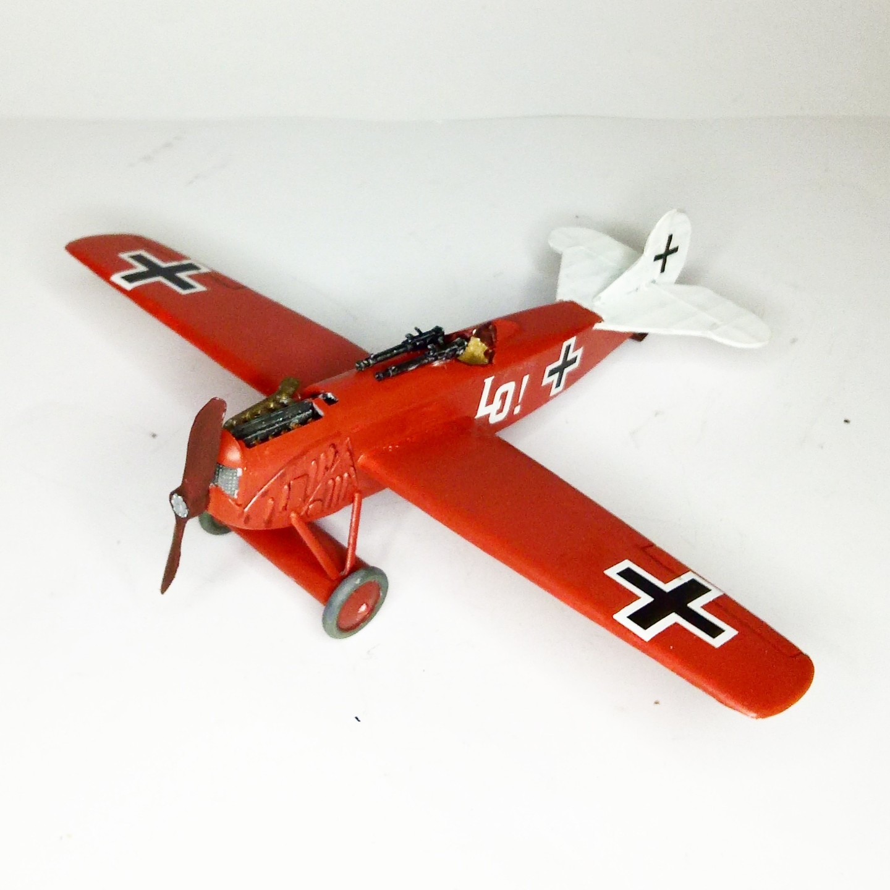

Aerei · scale model archive
Fokker E IX
Fokker E IX — Kit: conversion, Scale: 1/48. This is a fictitious model, I wanted to check how incredibly modern a monoplane Fokker DVIII would look like,…

Photo gallery
English description
This is a fictitious model, I wanted to check how incredibly modern a monoplane Fokker DVIII would look like, and indeed it does
#1/48 #conversion
Descrizione italiana
Questo è una immaginario modello, I wanted una check how incredibly modern una monoplane Fokker DVIII would look like, e indeed lo does.